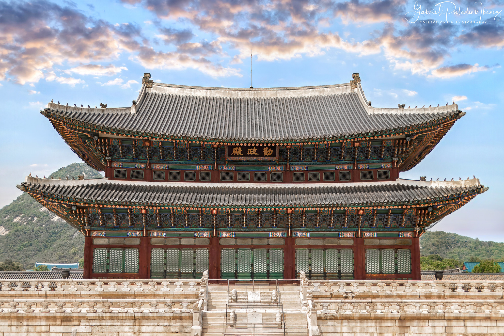
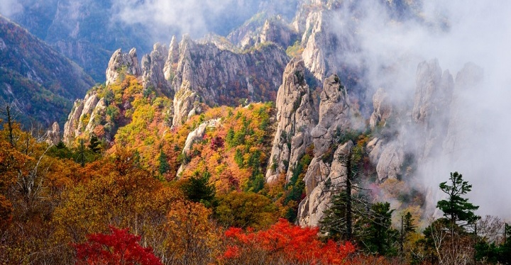
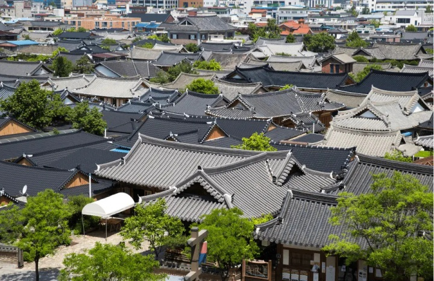

KOR ∨
☰
대한민국은 오랜 전통과 현대적인 문화가 공존하는 나라입니다.
궁궐과 한옥 같은 역사 유산부터 활기찬 도시와 아름다운 자연까지 다양한 매력을 지니고 있습니다.

대한민국의 다양한 지역을 살펴보고 각 지역의 매력을 만나보세요.


대한민국의 수도이자 심장부인 서울은 600년 조선 왕조의 유구한 역사가 살아 숨 쉬는 고궁과 현대적인 초고층 빌딩들이 절묘한 조화를 이루는 역동적인 메트로폴리스입니다.경기도는 서울을 넓게 감싸 안고 있는 유네스코 세계문화유산인 수원 화성의 웅장한 성곽미를 비롯하여, 한국의 전통 생활 양식을 그대로 보존한 한국민속촌까지 다채로운 역사적 가치를 품고 있는 지역입니다.

대한민국의 동북쪽에 위치한 강원도는 태백산맥의 웅장한 산세와 에메랄드빛 동해 바다가 어우러진 천혜의 자연 정원을 품고 있는 지역입니다. 사계절 내내 각기 다른 매력을 뽐내는 설악산과 오대산의 단풍, 겨울이면 은빛 설국으로 변신하는 대관령 양떼목장, 그리고 탁 트인 해안선을 따라 펼쳐지는 강릉과 속초의 푸른 바다는 지친 현대인들에게 최고의 휴식과 치유를 선사합니다. '강원'이라는 이름은 이 지역의 핵심 거점인 강릉과 원주의 앞 글자를 따서 지어졌습니다.

대한민국의 중심부에 위치하여 '중원'이라 불리는 충청도는 온화한 기후와 수려한 자연경관, 그리고 그곳을 닮은 여유롭고 따뜻한 인심이 매력적인 지역입니다. 서쪽으로는 드넓은 서해안의 갯벌과 아름다운 낙조를 품은 태안해안국립공원이 펼쳐져 있으며, 내륙으로는 속리산과 계룡산의 웅장한 산세와 대청호의 잔잔한 물결이 어우러져 한 폭의 산수화 같은 풍경을 선사합니다. 특히 최근에는 행정의 중심인 세종시와 과학기술의 메카인 대전이 조화를 이루며 국가 발전의 핵심 축 역할을 담당하고 있으며, 풍부한 먹거리와 함께 충청도 특유의 느림의 미학을 느낄 수 있는 힐링 여행지로 각광받고 있습니다. '충청'이라는 이름은 이 지역의 핵심 거점인 충주와 청주의 앞 글자를 따서 지어졌습니다.

경상도는 대한민국 동남부에 위치하여 낙동강 줄기를 따라 기름진 평야와 수려한 해안선을 동시에 품고 있는 역동적인 지역입니다. 찬란한 신라 천 년의 문화를 간직한 경주부터 현대 산업과 해양 문화의 중심지인 부산과 울산까지, 과거와 현대가 가장 강렬하게 공조하며 독특한 에너지와 다채로운 볼거리를 선사하는 곳입니다. '경상'이라는 이름은 이 지역의 핵심 거점인 경주와 상주의 앞 글자를 따서 지어졌습니다.

대한민국 서남부에 위치한 전라도는 드넓은 호남평야가 어우러진 풍요로운 땅으로, 예로부터 '예향'과 '미식'의 고장이라 불릴 만큼 깊은 예술적 정취와 독보적인 음식 문화를 자랑합니다. 전주 한옥마을의 전통적인 멋부터 여부 밤바다의 낭만까지, 한국 고유의 서정적인 풍경과 따뜻한 정을 온전히 느낄 수 있는 매력적인 곳입니다. '전라'라는 이름은 이 지역의 핵심 거점인 전주와 나주의 앞 글자를 따서 지어졌습니다.

대한민국 최남단에 위치한 환상의 섬 제주도는 화산 활동이 빚어낸 독특한 지형과 에메랄드빛 바다가 어우러진 세계적인 휴양지로, 섬 전체가 유네스코 세계자연유산으로 등재될 만큼 경이로운 경관을 자랑합니다. 과거 독립된 해상 왕국인 '탐라국'으로서 독자적인 문화를 꽃피워온 제주도는 척박한 자연환경을 극복하며 일구어낸 해녀 문화와 '삼다(三多)' 정신 등 육지와는 차별화된 고유의 정체성을 간직하고 있습니다.